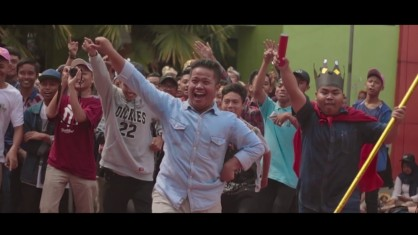
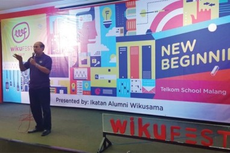
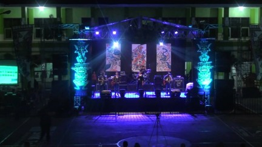
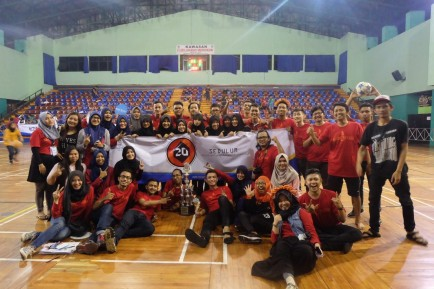
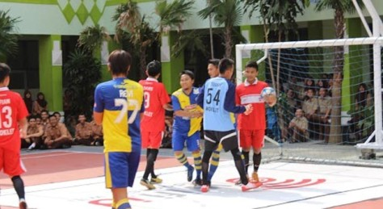

SMK Telkom Malang
SMK Telkom Malang
Home | Galery |
Visi & Misi | Profil
BulBa
BulBa atau Bulan Bahasa ini dilaksanakan untuk memperingati bulan Bahasa. Biasanya dilaksanakan
di bulan September. Pada event ini, banyak kompetisi yang ada seperti,
lomba poster, lomba cipta lagu,
lomba musikalisasi puisi, lomba MMB (Moklet Mencari Bakat), lomba fotografi, dan lomba film pendek
Wikufest
Wikufest adalah suatu event dimana kita bisa mendengarkan berbagai cerita
dan
motivasi dari pembicara yang biasanya alumni dari sekolah kami. Wikufest ini dilaksanakan selama 2 hari
Galasesa
Galasesa adalah dimana acara persembahan terakhir untuk kelas 12 yang lulus. Event ini dilaksanakan sore sampai malam
hari yang bersamaan dengan wisuda di pagi harinya.
Banyak perform band, antique, dan yang pasti juga ada perform dari guest star
Wikucup
Wikucup adalah salah satu event yang paling menyenangkan karena kita bisa bertemu dengan alumni-alumni
SMK Telkom Malang.
Pada event ini akan diadakan berbagai perlombaan di bidang olahraga. Panitia dari event ini berganti-ganti
setiap taunnya sesaui dengan angkatan
Moklet League
Moklet League juga merupakan event perlombaan di bidang olahraga. Namun, berbeda dengan Wikucup.
Peserta dari event ini merupakan siswa siswi kelas X dan XI. Event ini dilaksanakan mulai dari awal semester 2 sampai selesai